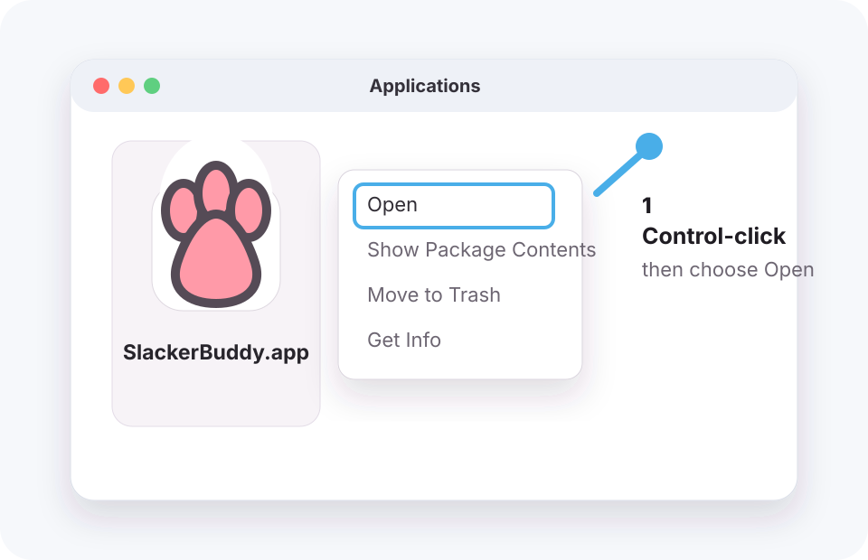
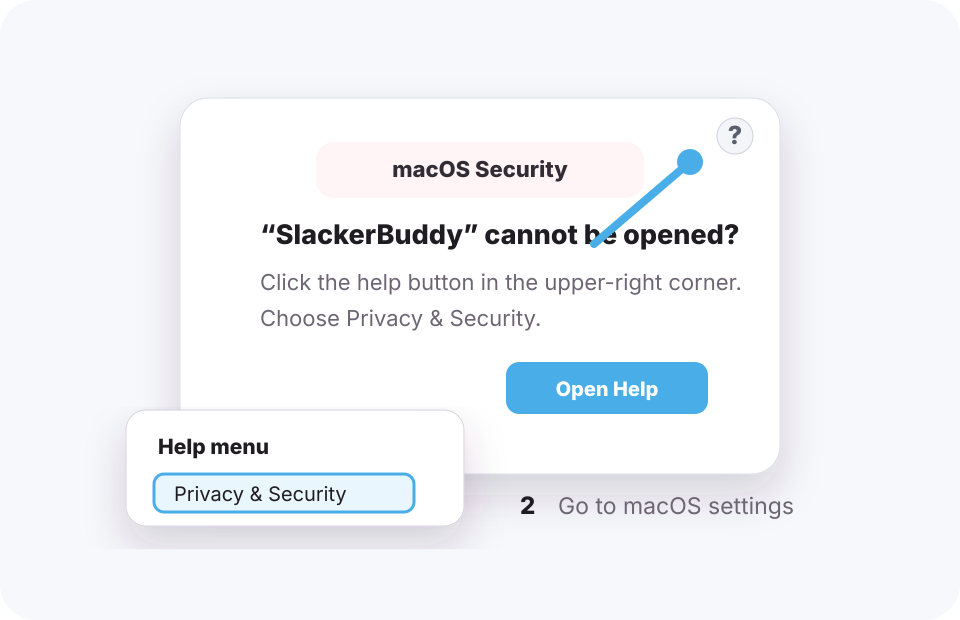
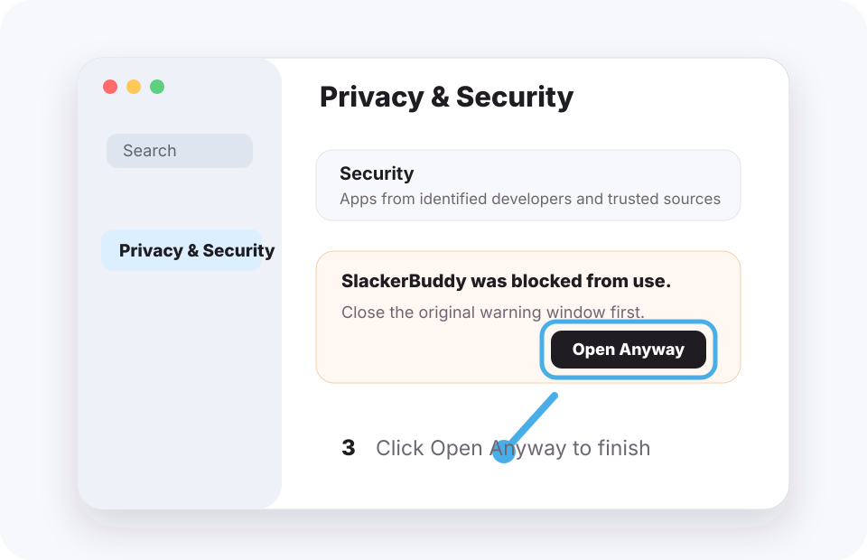

Drag the cat wherever you like, resize it, and let it quietly sit beside your work.
Meet FuFu
Clicks, drags, reminders, and automatic actions can trigger reviewing, jumping, waiting, and running animations.
Customize rest intervals, water intervals, bubble duration, and lower-distraction behavior.
Supports PetDex pets
SlackerBuddy is not limited to the default FuFu pet. It supports PetDex pet packages, so you can pick a desktop pet you like, download it, place it in your local pet folder, and switch to it from SlackerBuddy settings.
Open PetDex to choose a pet- Go to PetDex, choose a pet you like, and click download pet.
- Put the downloaded pet folder into
~/.codex/pets. Each pet usually includespet.jsonand a spritesheet image. - Open SlackerBuddy from the menu bar, go to settings, and choose your new PetDex pet from the Pet option.
- If settings is already open, reopen it or switch the pet picker once so SlackerBuddy refreshes the available pets.
Download and install
After downloading the DMG, drag SlackerBuddy into Applications. Because this lightweight build is not notarized yet, macOS may block the first launch. Follow these steps to open it.
- 1
Click the download button above and save SlackerBuddy.dmg.
- 2
Open the DMG and drag SlackerBuddy.app into Applications.
- 3
On first launch, right-click or Control-click SlackerBuddy.app, then choose Open.
- 4
If a security dialog appears, click the question mark in the upper-right corner, then click Privacy & Security to open System Settings.
- 5
Close the original security dialog, click Open Anyway in System Settings, then confirm. After that, SlackerBuddy can launch normally.
What to do on first launch
SlackerBuddy is currently a lightweight distribution build, so macOS may ask for one extra confirmation the first time. These three images show the usual flow: manually choose Open, go from the security prompt into System Settings, then click Open Anyway.

1. Right-click or Control-click Open
Find SlackerBuddy.app in Applications, right-click or Control-click it, then choose Open.

2. Use the question mark to reach Privacy & Security
If a security dialog appears, click the question mark in the upper-right corner, then choose Privacy & Security from the help menu.

3. Click Open Anyway
Close the original dialog, click Open Anyway in Privacy & Security, then confirm the launch.